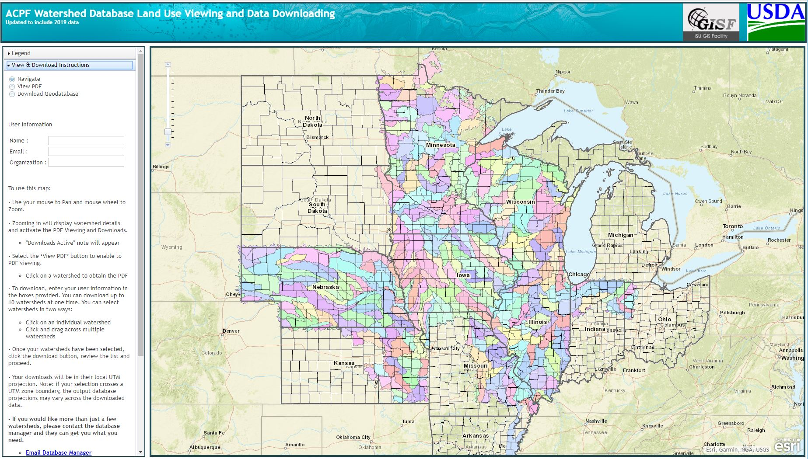

For this final project, I wanted to convey a little bit about the research I am working on here at Iowa State University. This research focuses on developing, applying, and integrating multi-state financial data regarding water quality best management practices (BMPs) for use with the USDA Agricultural Conservation Planning Framework (ACPF). The ACPF uses high-resolution elevation data and a toolbox developed within ArcGIS to spatially identify areas within agricultural watersheds for implementing BMPs. Incorporating financial data into this process will support watershed management by assessing the economic cost factors associated with conservation planning. This involves calculating direct long-term annualized costs for BMP installation and management in the following states - Iowa, Illinois, Indiana, Minnesota, Kansas, Missouri, Nebraska, and Wisconsin. Financial assessments use discounted cash flow techniques. BMPs accounted for include drainage management, grassed waterways, contour buffer strips/ prairie strips, water and sediment control basins, bioreactors, saturated buffers, nutrient removal wetlands, and multi-species and grassed riparian buffers. Land use opportunity costs of BMPs that require removing cropped/pastured land from production (e.g., grassed waterways, vegetative filter strips, buffer strips, wetlands), are spatially determined according to state-relevant, weighted-average crop productivity indices and land rent relationships. Calculated direct and land-use opportunity costs for BMPs are integrated with the ACPF toolbox to allow users to assess the cost-effectiveness of conservation scenarios designed to reduce nitrate-N in surface waters. To illustrate the use of these data, integration with ACPF, and outputs, Big Creek watershed in central Iowa was selected as a case study watershed. The combination of this data and tool will assist water quality stakeholders and technical service providers to determine where BMPs should be placed on the landscape to yield the most effective and lowest cost nitrate-N reduction at meaningful watershed scales. For this project, I simply focused on demonstrating a few BMPs that can be generated by the ACPF.
To begin, I gathered data from the ACPF Watershed Database. This is where geodatabases can be downloaded for various sized watersheds across the Midwest and used within the ACPF or other GIS tools.
The map above shows the ACPF Watershed Database where data can be downloaded.
The data gathered above came in shapefiles. In order to convert these data to be used within the Leaflet map, QGIS was used to create GeoJSON files.
The shapefiles listed in the QGIS Layers menu above were imported onto the map and then exported as GeoJSON files. The Coordinate Reference System was set to EPSG:4326 WGS 84 in order to be compatible in the web map.
Within Brackets, the code for my project was created. A basic Leaflet map was created and the source links for all of my GeoJSON files were added to the code.
Within the JavaScript portion of my code, I selected two basemaps for my project. These basemaps can be found at Leaflet Providers along with other free tiles and their code.
For this project I selected the Open Street Map and the Esri World Shaded Relief map. I created tile layers for each of these maps.
Next, I added all of my GeoJSON files. Each element of the map was coded as its own L.geoJSON layer.
The basemaps and overlays were the categorized and layer controls were added to create a map where the user could decide which BMPs and other watershed elements were present on the map.
Initially, without any styling, these elements did not make sense when placed on the map. With all of the overlay layers being the same color, it would be difficult for viewers to discern different BMPs.

In order to make the map more readable, I added style to each overlay element so that it was easier to distiguish between BMPs.

Lastly, to allow for more user interaction, I coded buttons that can be used to zoom in on different BMPs so that viewers can understand where they get placed on the landscape.
Overall, my project allows viewers to gain a general understanding of what the ACPF can offer, deeper knowledge about a select number of best management practices, and a brief look at elements that go into watershed planning. Ideally, more information could have been given about each specific BMP present on the map, such as area or length, perhaps in a pop-up box. This would have provided viewers with even more information about these practices. The result of this project showcases the research I am contributing to here at Iowa State University and the functionality and utility of the ACPF as a tool for watershed planners throughout the Midwest.
Return to Final Project.